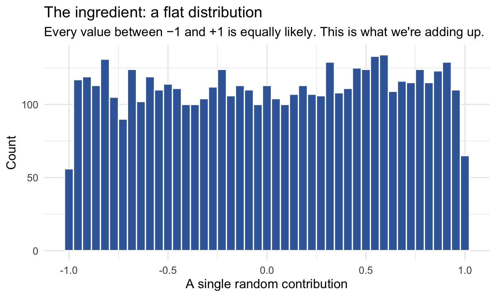
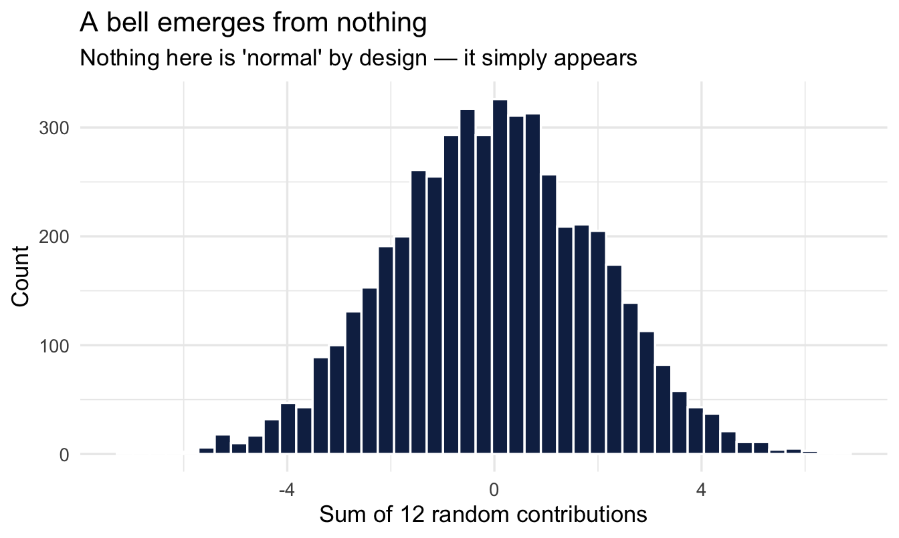
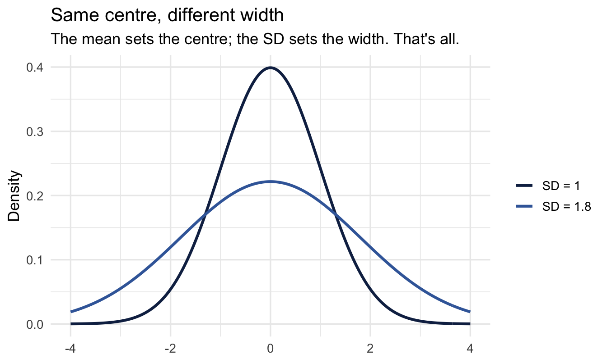
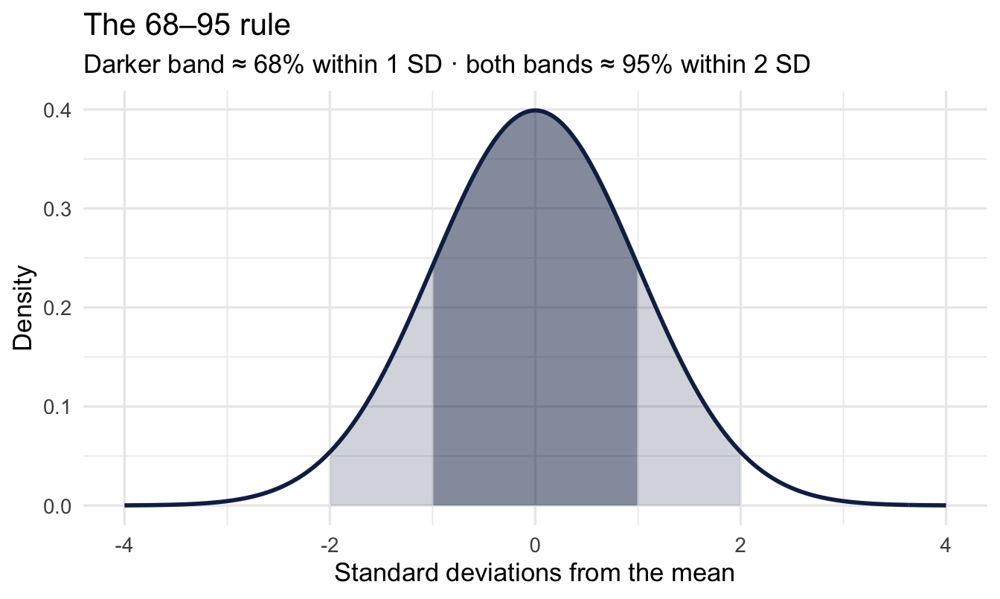
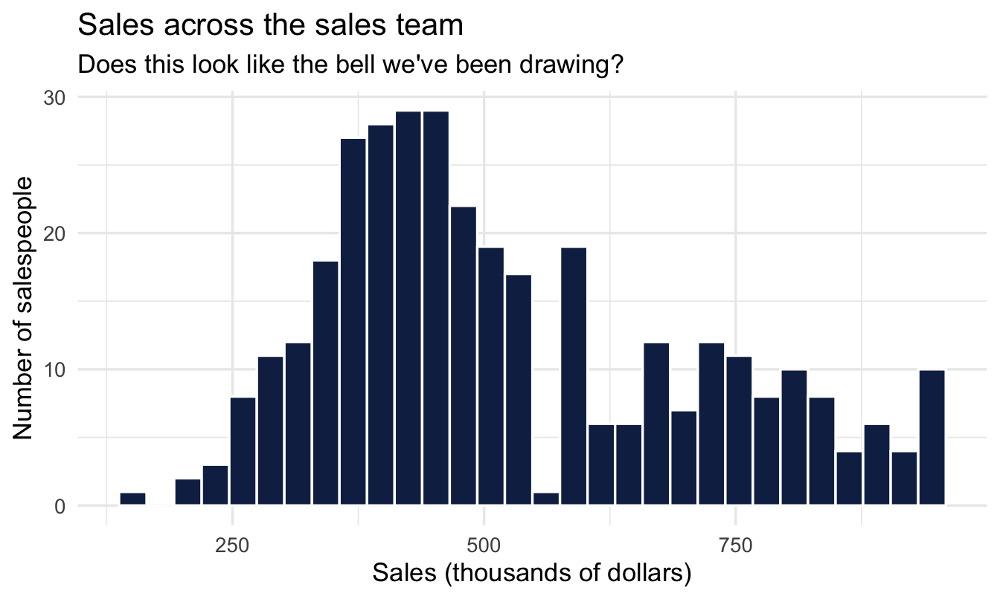
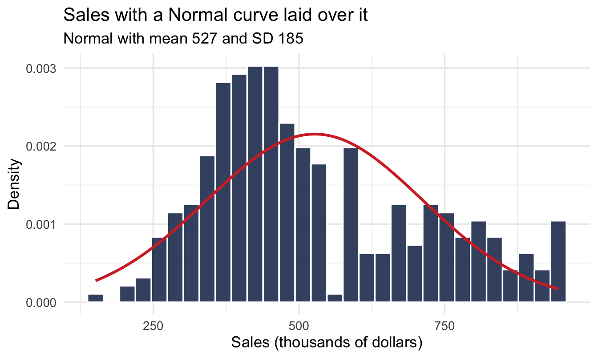
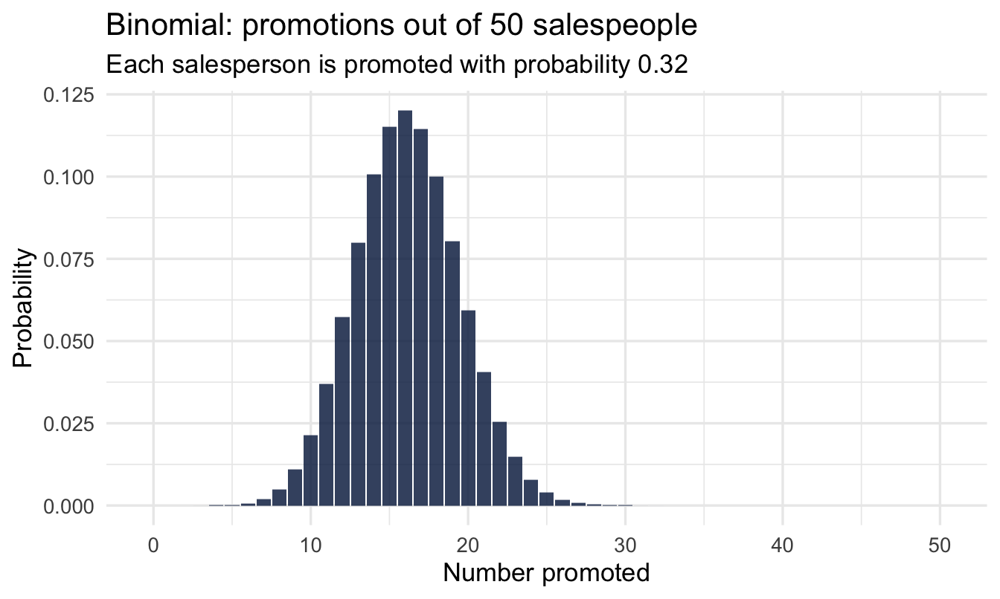
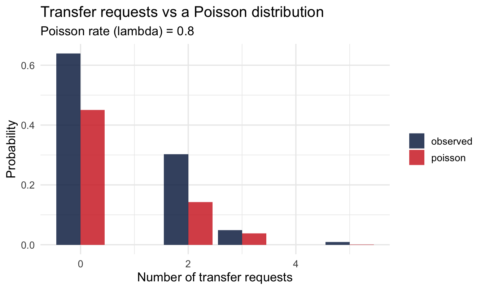
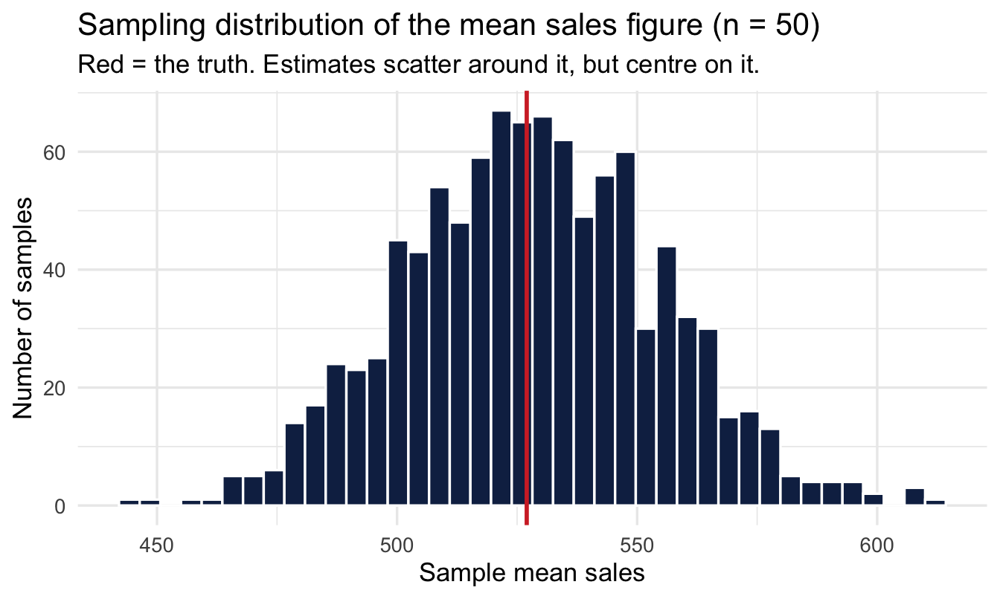
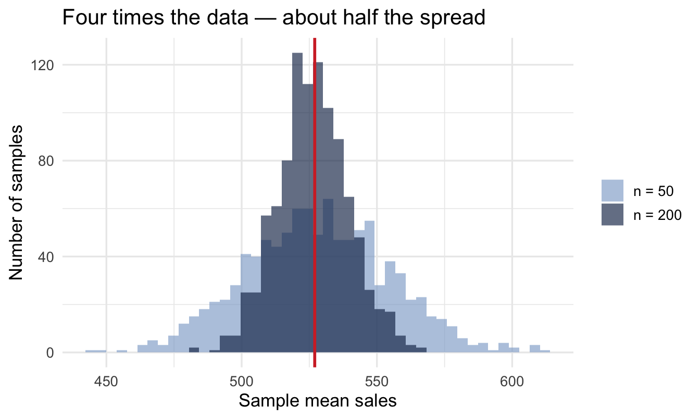

library(tidyverse)
library(peopleanalyticsdata)
theme_set(theme_minimal(base_size = 13))
set.seed(2026)
data("salespeople", package = "peopleanalyticsdata")
# Chapter 1 found a single missing value in each of `sales`,
# `customer_rate` and `performance`; dropping those rows here keeps
# the rest of this chapter's code simple.
salespeople <- salespeople |> drop_na(sales, customer_rate, performance, promoted)
# Used once, for the Poisson section; we meet it properly in Chapter 8.
data("managers", package = "peopleanalyticsdata")3 Distributions, Sampling & the Idea of a Model
Welcome back
This is the bridge chapter. Today we meet the handful of distributions that describe most People Analytics data, and we discover the single most important fact in statistics: every sample is a little different from the last.
The argument you’ve probably already had
You run a pulse survey in the Manchester office. Fifty responses, average happiness 3.2 out of 4. You send it round.
A colleague runs the same survey the following week, same office, fifty different people. She gets 2.9.
Now watch what happens in the meeting. Somebody will want to know which number is right. Somebody else will start looking for the reason — was the second week after the reorg announcement? Did your sample catch more of the sales floor? Was the question worded the same? Within ten minutes there’ll be a theory, and possibly an action.
Important
Here’s the possibility nobody in that room raises: nothing happened. Two samples of fifty people from the same unchanged office bounce around by a couple of tenths as a matter of course, for no reason beyond which fifty people happened to reply.
Whether this gap is inside that range is a question with an actual answer, and we’ll work it out at the end of the chapter.
If you can’t tell the difference between a real change and this — the ordinary wobble of sampling — then every number you report is a coin-flip away from a wrong conclusion, and no amount of careful analysis afterwards will save it.
By the end of this chapter you’ll be able to say how big that wobble should be, and therefore whether 3.2 versus 2.9 is worth a meeting.
Analysis strategy
What we have. Two survey results from the same office, three weeks apart: fifty responses averaging 3.2, then fifty different responses averaging 2.9. That is the entire dataset for the question, and it is worth noticing how little it is.
What would answer the question. Not “which number is right” — both are right, they are just answers to slightly different questions. What settles the meeting is a single quantity: how far apart two such surveys would be expected to fall if nothing at all had changed. Once you have that number, 0.3 is either inside it or outside it, and the argument is over.
What could go wrong. Mostly that we never compute it. The failure mode here is social rather than statistical: a room full of capable people will generate an explanation for the gap in under a minute, and an explanation is much more satisfying than “that’s the wobble”. A second risk is quieter — the expected wobble depends on how spread out individual answers are, and if we guess that badly the whole comparison is off.
So the plan. Meet the handful of distributions that describe most People Analytics data, so we can say what shape the answers take. Then watch what happens when you draw sample after sample from an unchanged population. That gives us the size of the wobble, and the last three lines of the chapter apply it to 3.2 against 2.9.
What would make us stop. If the gap turns out to sit comfortably inside the ordinary wobble, the correct deliverable is one sentence saying so — and no theory about the reorg, the sales floor, or the question wording. Producing that sentence is a result, not a failure to find one.
What you’ll be able to do by the end
- Recognise the Normal, Binomial and Poisson distributions, and choose between them
- Explain the difference between a population and a sample — including why you still need statistics when you have everybody
- Describe sampling variation and the sampling distribution
- Use the standard error to say how much a number should be expected to move on its own
- Explain what it means to say a model is “signal + noise”
3.1 Setup
TipA colour convention for this chapter
Most of the charts below compare your data against a model of it. Throughout, navy is the data you actually have and red is the model being held up next to it. When the two disagree, that’s the interesting bit.
3.2 What a distribution tells you
A distribution describes which values are common, which are rare, and how spread out they are — where the middle is, how wide the spread is, whether it leans.
Note
Name the shape and you get a lot for free: a way to summarise it in a couple of numbers, and a way to judge whether any observation is surprising.
Three shapes cover most People Analytics data, and choosing between them is easier than it looks — you’re not judging what the data looks like, you’re asking what kind of thing you measured.
| If one observation is… | The shape is | Example |
|---|---|---|
| A quantity that could take any value | Normal | Sales, salary, time to fill a role |
| A count of successes out of a fixed number of tries | Binomial | 13 promotions out of 40 salespeople |
| A count of events with no maximum you’d ever reach | Poisson | Transfer requests per team per year |
Important
Ask the question in that order — what did I measure? — and the answer usually falls out. The common mistake is to reach for the Normal by default because it’s the one everybody remembers, then apply it to a count that can’t go below zero and doesn’t come in halves.
3.3 The Normal distribution
3.3.1 Why the bell curve appears everywhere
Because most things are pushed around by many small, independent contributing factors that add up. A salesperson’s total sales are pushed a little one way or the other by territory, client mix, timing of deals, effort, luck… No single factor dominates.
Important
Add lots of small contributing factors together and you almost always get a bell. Read “add” literally, not figuratively — it is the sum() in the code below.
You already meet Normals every day:
| In daily life | In People Analytics |
|---|---|
| Adult heights | Sales figures |
| Exam marks in a big cohort | Time to fill a role |
| Blood pressure readings | Daily applications received |
| Errors in careful measurement | Time to productivity for new hires |
3.3.2 See it happen
Start with the ingredients, because the whole point of this demonstration is what they aren’t. Each contribution is drawn from a flat distribution — every value between −1 and +1 equally likely, no centre, no tails, nothing bell-shaped anywhere in it:
set.seed(300)
tibble(contribution = runif(5000, min = -1, max = 1)) |>
ggplot(aes(contribution)) +
geom_histogram(bins = 45, fill = "#3d68a8", colour = "white") +
labs(title = "The ingredient: a flat distribution",
subtitle = "Every value between −1 and +1 is equally likely. This is what we're adding up.",
x = "A single random contribution", y = "Count")
That is as un-Normal as a distribution gets. Keep the shape of it in your eye for the next chart.
Now twelve of those small random contributions, added up:
set.seed(301)
1tibble(total = replicate(5000, sum(runif(12, min = -1, max = 1)))) |>
ggplot(aes(total)) +
geom_histogram(bins = 45, fill = "#122a52", colour = "white") +
labs(title = "A bell emerges from nothing",
subtitle = "Nothing here is 'normal' by design — it simply appears",
x = "Sum of 12 random contributions", y = "Count")- 1
-
Read this from the inside out.
runif(12, min = -1, max = 1)draws twelve contributions, each equally likely to be anywhere between −1 and +1 — a perfectly flat distribution, nothing bell-shaped about it.sum()adds them into a single total.replicate(5000, ...)repeats that whole exercise 5,000 times. The bell is in none of the ingredients — the chart above shows exactly what they look like — and it appears purely from the adding.

Note
This is the central limit theorem, and it’s the reason the Normal turns up so relentlessly. It isn’t that nature likes bell curves. It’s that anything built by summing many small independent contributions ends up bell-shaped almost regardless of what the contributions looked like individually.
Read the conditions in that sentence as a warning rather than a licence. Many, small, independent, added: break any one — a single factor that dominates, contributions that move together, an outcome built by multiplying rather than adding — and the bell need not appear. You can rarely verify all four in real data, which is why the working rule in this book is to check the shape rather than assume it, as we do with the sales figures below.
3.3.3 The anatomy of a Normal
A Normal distribution is fully described by just two numbers: its mean (where the hump sits) and its SD (how wide it is). No other shape parameters, no options. That economy is a large part of why it’s so widely used.
normal_widths <- bind_rows(
tibble(x = seq(-4, 4, length.out = 400), width = "SD = 1") |>
mutate(y = dnorm(x, mean = 0, sd = 1)),
tibble(x = seq(-4, 4, length.out = 400), width = "SD = 1.8") |>
mutate(y = dnorm(x, mean = 0, sd = 1.8))
)
ggplot(normal_widths, aes(x, y, colour = width)) +
geom_line(linewidth = 1.1) +
scale_colour_manual(values = c("#122a52", "#3d68a8")) +
labs(title = "Same centre, different width",
subtitle = "The mean sets the centre; the SD sets the width. That's all.",
x = NULL, y = "Density", colour = NULL)
3.3.4 The 68–95 rule
Worth committing to memory, because it converts a standard deviation into a sentence you can say out loud:
- About 68% of values fall within 1 SD of the mean
- About 95% fall within 2 SD
normal_curve <- tibble(x = seq(-4, 4, length.out = 400)) |>
mutate(y = dnorm(x, mean = 0, sd = 1))
ggplot(normal_curve, aes(x, y)) +
geom_area(data = filter(normal_curve, x >= -2, x <= 2),
fill = "#122a52", alpha = 0.20) +
geom_area(data = filter(normal_curve, x >= -1, x <= 1),
fill = "#122a52", alpha = 0.40) +
geom_line(colour = "#122a52", linewidth = 1) +
labs(title = "The 68–95 rule",
subtitle = "Darker band ≈ 68% within 1 SD · both bands ≈ 95% within 2 SD",
x = "Standard deviations from the mean", y = "Density")
Tip
Try it on something you know. If time-to-hire averages 42 days with an SD of 10, then roughly two thirds of your roles fill between 32 and 52 days, and all but one in twenty between 22 and 62. A req that takes 70 days is genuinely unusual; one that takes 55 is not, whatever the hiring manager says.
3.3.5 Now our own data
ggplot(salespeople, aes(x = sales)) +
geom_histogram(bins = 30, fill = "#122a52", colour = "white") +
labs(title = "Sales across the sales team",
subtitle = "Does this look like the bell we've been drawing?",
x = "Sales (thousands of dollars)", y = "Number of salespeople")
3.3.6 Does a Normal actually fit?
mean_sales <- mean(salespeople$sales)
sd_sales <- sd(salespeople$sales)
ggplot(salespeople, aes(x = sales)) +
1 geom_histogram(aes(y = after_stat(density)),
bins = 30, fill = "#122a52", colour = "white", alpha = 0.85) +
2 stat_function(fun = dnorm,
args = list(mean = mean_sales, sd = sd_sales),
colour = "#d32f2f", linewidth = 1.1) +
labs(title = "Sales with a Normal curve laid over it",
subtitle = paste0("Normal with mean ", round(mean_sales),
" and SD ", round(sd_sales)),
x = "Sales (thousands of dollars)", y = "Density")- 1
-
after_stat(density)rescales the histogram from counts to density, so its total area is 1. It has to be 1 because that is what makes a curve a distribution: the value has to land somewhere, so the total probability — and therefore the area under any density curve, the Normal we are about to overlay included — is 1 by definition. Without the rescaling the bars and the curve would be on completely different vertical scales and the comparison would be meaningless. - 2
- The Normal we’re testing against, given the mean and SD of the real data. We’re not fitting anything — just asking whether the simplest possible summary of this variable does a decent job.

Note
The Normal describes the middle of the data reasonably well and may miss a little in the tails — that’s fine. A distribution is a useful simplification, not a claim that reality is exactly this shape.
3.4 The Binomial distribution
3.4.1 When the outcome is yes or no
Some observations have only two outcomes, and we care how many went one way:
- 10 job offers → how many accepted?
- 20 interviews → how many led to a hire?
- 50 salespeople → how many get promoted?
That count is Binomial, and it needs just two things:
- n — how many opportunities
- p — the chance each one is promoted
3.4.2 Promotions out of 50 salespeople
p_promoted <- mean(salespeople$promoted)
tibble(promotions = 0:50) |>
mutate(prob = dbinom(promotions, size = 50, prob = p_promoted)) |>
ggplot(aes(x = promotions, y = prob)) +
geom_col(fill = "#122a52", alpha = 0.85) +
labs(title = "Binomial: promotions out of 50 salespeople",
subtitle = paste0("Each salesperson is promoted with probability ",
round(p_promoted, 2)),
x = "Number promoted", y = "Probability")
Bars, not a curve — you can promote 14 people or 15, never 14.5.
Tip
Read that chart as a range, not a point. With the 32% rate above and 50 salespeople you’d expect about 16 promotions, but anywhere from about 10 to 23 is unremarkable — that range is the middle 95% of the bars you are looking at, read straight off the distribution rather than from a rule of thumb (qbinom(c(0.025, 0.975), size = 50, prob = 0.32)). So a division that promoted 11 this year and 18 last year has not necessarily changed anything at all — which is the Manchester survey problem again, in a different form.
Note
This framing works because promotion is a yes/no event you can count, which is what the Binomial describes. A Likert item — an engagement question answered 1 to 5 — is not that, even though its average looks like a number you could treat the same way. Whether a move from 4.5 to 4.3 means anything needs a model built for ordered categories, and that is Chapter 18.
ImportantNext chapter we run this backwards
Today: given a rate, how likely is each count?
Next chapter: we saw 13 promotions in 40 salespeople — what is the true rate? The Binomial is what lets us answer that.
3.5 The Poisson distribution
3.5.1 Counting events in a window
Sometimes there’s no natural n — events just happen at some average rate: complaints per month, transfer requests per team, applications per posting. The Poisson needs only one number: the rate, λ (lambda).
Note“No maximum” is doing some work there
A fair objection, and worth meeting head on: a team of nine can’t file ten people’s worth of transfer requests, so there is a ceiling. Strictly, several of the examples above have one.
What matters is not whether a ceiling exists but whether the counts ever come near it. The Binomial’s ceiling is right there in the arithmetic — 40 salespeople, at most 40 promotions, and the distribution piles up against the top when the rate is high. The Poisson’s is far enough away to ignore: teams here file a handful of requests against a headcount many times that, so the shape of the distribution never feels the boundary.
The rule of thumb: if your typical count is small relative to the maximum possible, the Poisson is fine. When counts start pressing against a real limit — nearly everyone completing nearly every module, say — switch to a Binomial, which knows where the top is. And when the counts are more spread out than a Poisson allows for any reason, Chapter 12’s negative binomial is the next stop.
For this chapter we assume the ceiling is far enough away not to matter, which the data above bears out.
3.5.2 Our data: transfer requests
We’ll get properly acquainted with the managers dataset in Chapter 8 — for now, a first look at transfers, the number of transfer requests filed by a manager’s team:
transfer_rate <- mean(managers$transfers, na.rm = TRUE)
managers |>
count(transfers) |>
mutate(observed = n / sum(n),
poisson = dpois(transfers, lambda = transfer_rate)) |>
pivot_longer(c(observed, poisson), names_to = "source", values_to = "prob") |>
ggplot(aes(x = transfers, y = prob, fill = source)) +
geom_col(position = "dodge", alpha = 0.85) +
scale_fill_manual(values = c("#122a52", "#d32f2f")) +
labs(title = "Transfer requests vs a Poisson distribution",
subtitle = paste0("Poisson rate (lambda) = ", round(transfer_rate, 2)),
x = "Number of transfer requests", y = "Probability", fill = NULL)
Navy is what the managers actually filed; red is what a Poisson with the same average rate would produce. They’re close but not identical, and the gaps are where the model’s assumptions are showing.
Important
A distribution is a model — a useful approximation, never the literal truth. The skill is knowing when the approximation is good enough — and Chapter 15 comes back to this exact variable to show what happens when you don’t account for how much opportunity each manager’s team size gave for a transfer request to occur.
3.6 Population vs sample
3.6.1 You never see the whole picture
- The population is everyone you care about — every employee, every candidate, ever
- The sample is the handful you actually measured
Important
You compute everything from the sample, but want to say something about the population. That gap is where statistics lives.
“But I have everyone”
This is the objection every People Analytics practitioner raises, and it deserves a straight answer. You don’t have a sample of employees. You have the HRIS. Every single person, all 4,000 of them. Surely the attrition rate you compute is the attrition rate, full stop — no uncertainty, nothing to estimate?
It’s a fair challenge, and the answer is that you’re almost never actually asking about those 4,000 people.
Think about what the question is for. “Our attrition was 14% last year” is a complete and exact description of a year that has finished and cannot be changed. Nobody needs it. What they want to know is whether 14% is what this organisation tends to produce — and what it will do next year, and whether the retention programme moved it.
Those are questions about the process, not the headcount. And of that process, your 4,000 employees over one year are a sample: one draw from all the ways last year could have gone. Twenty of those leavers might easily not have left. A different competitor might have opened an office nearby. Run the year again and you’d get 13%, or 16%.
Important
You have the whole population of people, and a sample of one year from the process that generated them. The moment your question concerns next year, or a comparison, or a cause, you are back to inference — and the uncertainty is real even though the count is exact.
This is also why small teams are so treacherous. A twelve-person team with three leavers has 25% attrition, exactly and unarguably. As an estimate of what that team tends to do, it’s nearly worthless. Chapters 8, 14 and 15 are about fixing precisely that.
3.6.2 Today we’ll cheat
We’ll treat all 350 salespeople as if they were the whole population, so we know the “true” average sales figure:
population_mean_sales <- mean(salespeople$sales)
population_mean_sales[1] 527.00573.6.3 Take a sample — then take another
set.seed(302)
mean(slice_sample(salespeople, n = 50)$sales)[1] 568.48mean(slice_sample(salespeople, n = 50)$sales)[1] 480.48mean(slice_sample(salespeople, n = 50)$sales)[1] 524.92Three analysts, three answers, one unchanged company — and not one of them has made a mistake.
Important
This is the Manchester survey. Nothing was different between those three samples: not the week, not the reorg, not the question wording. The only thing that changed was which fifty rows came out.
If you had received only the first number, you would have believed it.
3.7 Sampling variation
3.7.1 What if we did it a thousand times?
set.seed(303)
1sample_means_50 <- replicate(
1000,
2 mean(slice_sample(salespeople, n = 50, replace = TRUE)$sales)
)
tibble(mean_sales = sample_means_50) |>
ggplot(aes(x = mean_sales)) +
geom_histogram(bins = 40, fill = "#122a52", colour = "white") +
geom_vline(xintercept = population_mean_sales,
colour = "#d32f2f", linewidth = 1) +
labs(title = "Sampling distribution of the mean sales figure (n = 50)",
subtitle = "Red = the truth. Estimates scatter around it, but centre on it.",
x = "Sample mean sales", y = "Number of samples")- 1
-
replicate()runs the expression inside it 1,000 times and collects the answers. Here each run is a whole imaginary study: survey 50 people, compute their mean. We end up with 1,000 studies that could have happened. - 2
-
replace = TRUEputs each salesperson back before the next is drawn, so every one of the 50 is an independent pick. We’re treating our 350 as a stand-in for a much larger workforce rather than a fixed pool being used up — which is what makes the arithmetic below come out cleanly.

Important
Look at the width of that histogram. Every bar is a mean that a competent analyst could have reported, from the same company, on the same day. The spread of this histogram is the honest margin of error on any one of them — and it is the thing that almost never appears on the slide.
NoteA different lens: this is a frequentist idea, on purpose
Repeating an imaginary study over and over and asking how estimates would scatter is the classical, frequentist way of thinking about uncertainty — and it’s genuinely useful for building intuition, which is why we’ve used it all chapter. Next chapter we introduce the Bayesian alternative: instead of imagining repeated studies we haven’t run, we ask directly “given the one sample I actually have, which values are plausible?” Both are legitimate; they’re answering subtly different questions, and it’s worth noticing the switch when it happens.
3.7.2 Bigger samples wobble less
set.seed(304)
sample_means_200 <- replicate(
1000,
mean(slice_sample(salespeople, n = 200, replace = TRUE)$sales)
)
bind_rows(
tibble(mean_sales = sample_means_50, n = "n = 50"),
tibble(mean_sales = sample_means_200, n = "n = 200")
) |>
1 mutate(n = factor(n, levels = c("n = 50", "n = 200"))) |>
ggplot(aes(x = mean_sales, fill = n)) +
geom_histogram(bins = 45, alpha = 0.65, position = "identity") +
geom_vline(xintercept = population_mean_sales,
colour = "#d32f2f", linewidth = 1) +
scale_fill_manual(values = c("#8fabd0", "#122a52")) +
labs(title = "Four times the data — about half the spread",
x = "Sample mean sales", y = "Number of samples", fill = NULL)- 1
- Setting the factor levels explicitly. Without this, ggplot orders the groups alphabetically — which puts “n = 200” before “n = 50” and quietly swaps the two colours relative to what you intended. A small thing that produces a confidently mislabelled chart.

TipFor the ML/DS crowd
Simulating “what if I drew a different sample” by resampling from data you already have is exactly the bootstrap — a technique you’ve likely used to put a confidence interval on a model metric. The sampling-distribution plots above are a bootstrap, just aimed at building intuition rather than producing a specific interval.
3.7.3 Putting numbers on it
That spread has a name — the standard error — and you don’t have to simulate it. There’s a formula, and it’s the most useful one in this chapter:
\text{SE} = \frac{\sigma}{\sqrt{n}}
How much your estimate wobbles equals how much the underlying data varies, divided by the square root of how many people you measured.
Two things follow immediately. Noisier data means a noisier estimate, which is unsurprising. And precision improves with the square root of sample size, which is where intuition fails.
set.seed(305)
sample_means_all <- replicate(
1000,
mean(slice_sample(salespeople, n = nrow(salespeople), replace = TRUE)$sales)
)
tibble(
sample_size = c(50, 200, nrow(salespeople)),
simulated = c(sd(sample_means_50), sd(sample_means_200), sd(sample_means_all)),
1 formula = sd_sales / sqrt(sample_size)
)- 1
- The theoretical standard error, straight from the formula above. Compare the two columns: the simulation and the arithmetic agree closely. That’s worth seeing once — it means you can get this number without simulating anything.
# A tibble: 3 × 3
sample_size simulated formula
<dbl> <dbl> <dbl>
1 50 26.5 26.2
2 200 13.1 13.1
3 350 9.59 9.90
ImportantThe square root is why precision is expensive
To halve your uncertainty you need four times the data. To cut it to a tenth, a hundred times.
Put that in survey terms. Going from 100 respondents to 400 is a hard quarter’s work and buys you a halving of the error bar. Going from 400 to 1,600 — a genuinely enormous undertaking in most organisations — buys you another halving, and no more.
Two practical consequences. Small samples improve cheaply: if you’re at 30 responses, getting to 120 is transformative and probably achievable. Large samples improve expensively: at 2,000 responses, chasing another 500 will not visibly move anything, and that effort is almost always better spent asking a better question of the people you’ve already got.
WarningWhere “just push the response rate” stops being good advice
The arithmetic above says small samples improve cheaply, and it is right. It is also easy to convert into advice that does harm in the one place people apply it hardest: the small team.
A fifteen-person team at 50% response is eight people. Push it to 100% and you have fifteen. That is a real gain in precision, and it is still fifteen — a wide interval either way, and one that no amount of chasing will close, because the team is the population. The improvement the formula promises is real and mostly irrelevant to the decision.
Three things worth knowing before you spend a manager’s credibility on it:
A response rate is not only a sample size. It is also a signal. People who don’t answer often haven’t forgotten — the survey didn’t feel safe, or the last one produced nothing. A 50% rate in a fifteen-person team is a finding in itself, and treating it purely as a denominator throws that away.
A sharp jump is a warning, not a win. A team that went from 50% to 100% in one cycle was pushed, and pushed people answer differently. You have traded a known bias — who chose to reply — for an unknown one, and the second is harder to reason about. A slow rise across cycles is a different thing entirely, and a good sign.
Below a certain size the tool is wrong, not underpowered. Most organisations won’t release results for a team of that size at all, on privacy grounds, so the precision was never going to reach anybody. And the thing you actually want to know about fifteen people is usually better obtained by talking to them: a skip-level, a focus group, or the behavioural signals that don’t need a survey at all — who is applying internally, who has stopped speaking up.
So the rule the square root gives you is about how much precision more data buys. It is not an instruction to go and get the data. For a small team, the honest sequence is: ask whether a number is what the situation needs, and if it is, ask whether this team can produce one worth having.
Your turn
Repeat the sampling-distribution experiment for the promotion rate (mean of promoted) instead of sales, using samples of 50. Is it centred on the population rate?
# Your code here3.8 So: 3.2 versus 2.9?
We now have everything needed to answer the question the chapter opened with, and it takes three lines.
Happiness sits on a 4-point scale, and scores like that typically have a standard deviation somewhere around 0.8. With 50 respondents:
sd_happiness <- 0.8
n_responses <- 50
se_one_survey <- sd_happiness / sqrt(n_responses)
1se_difference <- se_one_survey * sqrt(2)
tibble(se_one_survey, se_difference,
observed_gap = 3.2 - 2.9,
gap_in_se = 0.3 / se_difference)- 1
- We’re comparing two surveys, and both wobble. When you subtract two independent estimates their uncertainties combine — not by adding, but by adding the squares and taking the root, which for two equal-sized surveys works out as multiplying by √2.
# A tibble: 1 × 4
se_one_survey se_difference observed_gap gap_in_se
<dbl> <dbl> <dbl> <dbl>
1 0.113 0.16 0.300 1.88So a single survey of 50 people carries a standard error of about 0.11, and the gap between two such surveys has a standard error of about 0.16.
ImportantThe answer
The observed gap of 0.3 is a bit under two standard errors. That puts it at the edge: larger than the everyday wobble, but a gap that size will still turn up by chance roughly one time in twenty when nothing whatsoever has changed.
So the honest answer in that meeting is neither “engagement has dropped” nor “it’s just noise”. It’s: “that’s on the boundary of what two identical surveys would differ by anyway. It’s worth a third survey, or a bigger one. It is not yet worth a theory about the reorg.”
Notice what the arithmetic bought you. Not certainty — it doesn’t exist here — but the ability to say how surprised to be, which is the difference between a considered response and a room full of speculation.
Note
That answer still leans on frequentist machinery: it asks how often a gap this big would appear if nothing had changed. From next chapter we’ll ask the question the room actually wanted answered — what’s the probability engagement really did fall? — which turns out to be a different, and more useful, calculation.
3.9 The idea of a model
3.9.1 Signal and noise
Every observation can be thought of as:
\text{observation} = \text{signal} + \text{noise}
- The signal is the systematic part we care about — the true average sales figure, the true promotion rate, the real effect
- The noise is everything else — the random wobble that makes each salesperson, and each sample, different
Note
A model says: “the signal looks like this, the noise looks like that.” Every distribution today is a candidate description of the noise.
3.9.2 Where this is heading
Frequentist statistics answers “how much would my estimate wobble if I repeated the study?”
Bayesian statistics answers the more direct question:
“Given the one sample I actually have, which values of the signal are plausible — and how sure am I?”
Next chapter we start answering it.
On the job
ImportantWhy this matters day to day
Your engagement survey, your attrition figures, your last headcount report — all of it is one sample. Everything you report is an estimate that would have come out a little differently with a different group of respondents or a different month. That’s the difference between “engagement is down” and the honest, defensible version: “engagement is down in this survey, by roughly this much, give or take this much.”
The habit to build: before you explain a movement, work out how big a movement would have been unremarkable. It takes a minute with the standard error formula, and it will stop you building a narrative on top of noise more often than any other single thing in this book.
Summary
NoteToday you learned
- Choose a distribution by asking what you measured, not what the histogram looks like: Normal for quantities, Binomial for successes out of a fixed number of tries, Poisson for counts whose ceiling is far enough away to ignore.
- The Normal turns up everywhere because sums of many small influences are bell-shaped, whatever the influences look like individually.
- A distribution is a model — a useful approximation, not the exact truth.
- A sample estimate is not the population value; it wobbles. Having every employee doesn’t exempt you: your question is usually about the process, and of that you have one year’s draw.
- The sampling distribution is centred on the truth and tighter with more data — a frequentist idea we’ve used to build intuition before switching lenses next chapter.
- SE = σ / √n. Precision improves with the square root of sample size, so halving your error bar costs four times the data. Small samples improve cheaply; large ones don’t.
- Before explaining a movement, work out how big a movement would have been unremarkable.
- Data = signal + noise.
Next chapter
Bayesian thinking — Bayes’ theorem and your first inference. We finally put prior, likelihood and posterior together and estimate a promotion rate the Bayesian way.